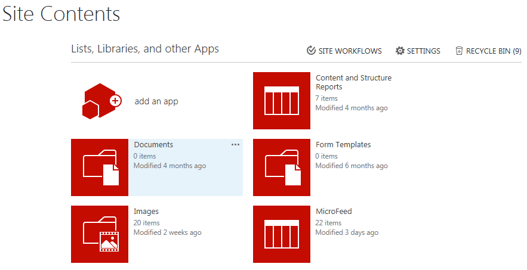
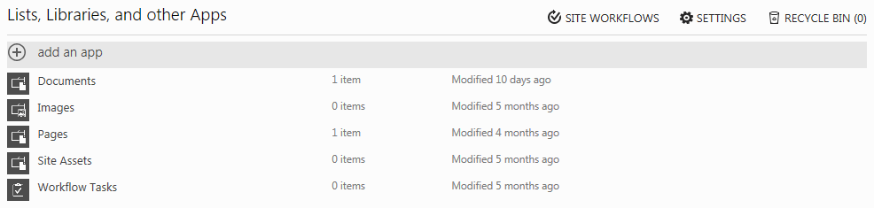
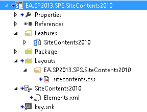
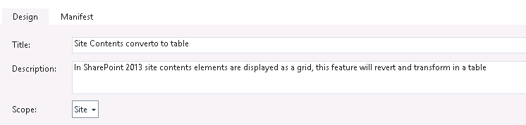

Introduction
SharePoint 2013 was redesigned thinking in metro style, that’s good for some things but this shouldn’t apply to all. For example, viewlsts.aspx page or Site Contents is used to see quickly all libraries and lists with its modified date and number of items.
With the new design it is impossible to see this information “quickly”, because you have big tiles with big scroll:

End users are really unhappy with that.
Solution
In this post, I will show how to return to 2010 styles by using list of elements instead using grid as a presentation technique.
This is quite straightforward, but we need to add our custom css in a separate file (never overwrite OOB css files).
So the steps will be:
Create our custom CSS, including this code:
Create Custom Master page and add a reference to the css file
Create a Deploy Package in order to deploy these changes in PROD (this is optional but recommendable).
This is the final aspect: 
Update December 2014
The ideal solution to deploy, as always, with a feature
We can create Empty SharePoint 2013 project, and add new Feature, new mapped layout for the css and new CustomAction to add the Css reference: 
Feature: 
Layouts file for the css will contain the above code.
Elements.xml file: